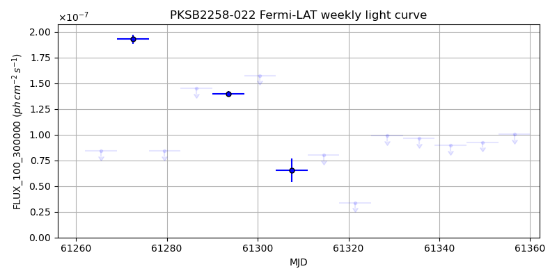
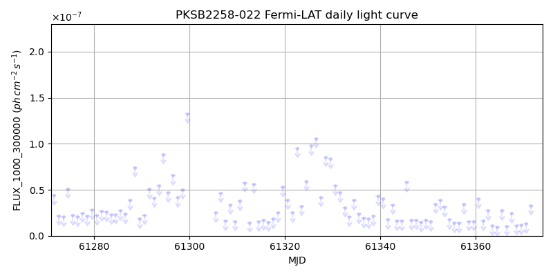
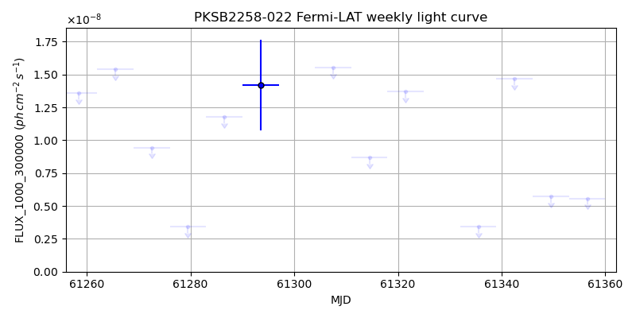

LAT Lightcurve site: https://fermi.gsfc.nasa.gov/ssc/data/access/lat/msl_lc/source/PKS_B2258-022
NED: Query
Time of last update of this page: UT: 2026-11-28 16:30 (MJD: 61372.688)
| Property | Value |
|---|---|
| R.A. | 23:01:07.92 |
| Dec. | -1:58:04.8 |
| z | 0.777 |
| 3FGL SpectrumType | |
| 3FGL PL Index | -1.00 |
| 3FGL Flux_100_300000 | -1.00e+00 |
| 3FGL Flux_1000_300000 | -1.00e+00 |
| 3FGL Flux >200 GeV | -1.00e+00 |
| 3FGL Extrap. Crab >200 GeV | -1.00 |
| 3FGL Flux After EBL Absorption >200GeV | -1.00e+00 |
| 3FGL EBL Crab Fraction >200GeV | -1.00 |
| MJD | dMJD | Flux | dFlux | Frac3FGL | FracCrab>200GeV | EBLFracCrab>200GeV |
|---|---|---|---|---|---|---|
| 61367.50 | 0.50 | 6.32e-08 | 0.00e+00 | 0.00 | 0.00 | -0.00 |
| 61368.50 | 0.50 | 3.69e-08 | 0.00e+00 | 0.00 | 0.00 | -0.00 |
| 61369.50 | 0.50 | 7.90e-08 | 0.00e+00 | 0.00 | 0.00 | -0.00 |
| 61370.50 | 0.50 | 8.08e-08 | 0.00e+00 | 0.00 | 0.00 | -0.00 |
| 61371.50 | 0.50 | 6.89e-08 | 0.00e+00 | 0.00 | 0.00 | -0.00 |

| MJD | dMJD | Flux | dFlux | Frac3FGL | FracCrab>200GeV | EBLFracCrab>200GeV |
|---|---|---|---|---|---|---|
| 61335.50 | 3.50 | 9.65e-08 | 0.00e+00 | 0.00 | 0.00 | -0.00 |
| 61342.50 | 3.50 | 8.94e-08 | 0.00e+00 | 0.00 | 0.00 | -0.00 |
| 61349.50 | 3.50 | 9.26e-08 | 0.00e+00 | 0.00 | 0.00 | -0.00 |
| 61356.50 | 3.50 | 1.01e-07 | 0.00e+00 | 0.00 | 0.00 | -0.00 |
| 61363.50 | 3.50 | 4.96e-08 | 0.00e+00 | 0.00 | 0.00 | -0.00 |

| MJD | dMJD | Flux | dFlux | Frac3FGL | FracCrab>200GeV | EBLFracCrab>200GeV |
|---|---|---|---|---|---|---|
| 61367.50 | 0.50 | 2.46e-08 | 0.00e+00 | 0.00 | 0.00 | -0.00 |
| 61368.50 | 0.50 | 1.12e-08 | 0.00e+00 | 0.00 | 0.00 | -0.00 |
| 61369.50 | 0.50 | 1.17e-08 | 0.00e+00 | 0.00 | 0.00 | -0.00 |
| 61370.50 | 0.50 | 1.30e-08 | 0.00e+00 | 0.00 | 0.00 | -0.00 |
| 61371.50 | 0.50 | 3.30e-08 | 0.00e+00 | 0.00 | 0.00 | -0.00 |

| MJD | dMJD | Flux | dFlux | Frac3FGL | FracCrab>200GeV | EBLFracCrab>200GeV |
|---|---|---|---|---|---|---|
| 61335.50 | 3.50 | 3.42e-09 | 0.00e+00 | 0.00 | 0.00 | -0.00 |
| 61342.50 | 3.50 | 1.47e-08 | 0.00e+00 | 0.00 | 0.00 | -0.00 |
| 61349.50 | 3.50 | 5.72e-09 | 0.00e+00 | 0.00 | 0.00 | -0.00 |
| 61356.50 | 3.50 | 5.56e-09 | 0.00e+00 | 0.00 | 0.00 | -0.00 |
| 61363.50 | 3.50 | 7.40e-09 | 0.00e+00 | 0.00 | 0.00 | -0.00 |
--------------------------------------------------------- Using user-supplied coords: 23:01:07.92 -1:58:04.8 2000 --------------------------------------------------------- FLWO UT night of: 2026-11-29 Local Sid. @ Midnight: 04:08 Sunset (-15.0) (local, UT): 18:31 01:31 Sunrise (-15.0) (local, UT): 05:53 12:53 Moonrise (local, UT): 21:57 04:57 Moonset (local, UT): Moon phase: 0.72 --------------------------------------------------------- AzTime LSID UT Obj_el Obj_az Mn_el Mn_az Sep. --------------------------------------------------------- 18:31 22:39 01:31 56.1 169.6 -32.9 32.1 142.8 19:01 23:09 02:01 56.5 183.1 -29.4 38.9 143.1 19:31 23:39 02:31 55.4 196.4 -25.4 45.0 143.5 20:01 00:09 03:01 52.9 208.6 -21.0 50.6 143.9 20:31 00:39 03:31 49.4 219.1 -16.2 55.6 144.2 21:01 01:09 04:01 44.9 228.1 -11.1 60.2 144.6 21:31 01:39 04:31 39.9 235.6 -5.4 64.5 144.9 22:01 02:09 05:01 34.4 242.1 0.4 68.5 145.2 22:31 02:39 05:31 28.6 247.7 5.8 72.2 145.5 23:01 03:10 06:01 22.6 252.7 11.6 75.8 145.8 23:31 03:40 06:31 16.5 257.3 17.5 79.4 146.0 00:01 04:10 07:01 10.2 261.5 23.6 82.9 146.3 00:31 04:40 07:31 4.0 265.5 29.7 86.5 146.6 01:01 05:10 08:01 -1.5 269.5 35.8 90.3 146.8 01:31 05:40 08:31 -9.0 273.4 42.0 94.4 147.0 02:01 06:10 09:01 -15.4 277.5 48.1 99.1 147.2 02:31 06:40 09:31 -21.7 281.8 54.2 104.7 147.5 03:01 07:10 10:01 -27.9 286.5 60.1 111.7 147.7 03:31 07:40 10:31 -34.0 291.7 65.6 121.1 147.9 04:01 08:10 11:01 -39.8 297.7 70.5 134.7 148.1 04:31 08:40 11:31 -45.2 304.7 74.0 154.7 148.3 05:01 09:11 12:01 -50.2 313.1 75.2 181.1 148.5 05:31 09:41 12:31 -54.5 323.2 73.6 206.8 148.7 05:53 10:02 12:53 -57.0 331.8 71.0 221.2 148.8 --------------------------------------------------------- Dark hours >55 deg.: 1.10 srcstart (UT): 2026-11-29 01:31 srcend (UT): 2026-11-29 02:37